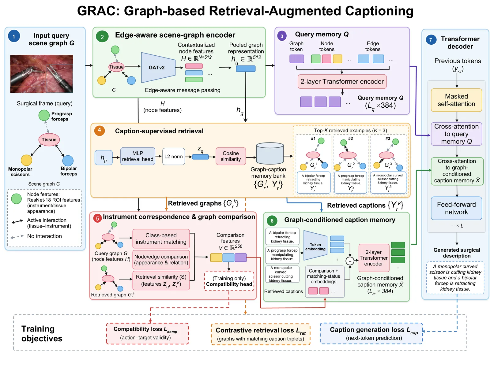
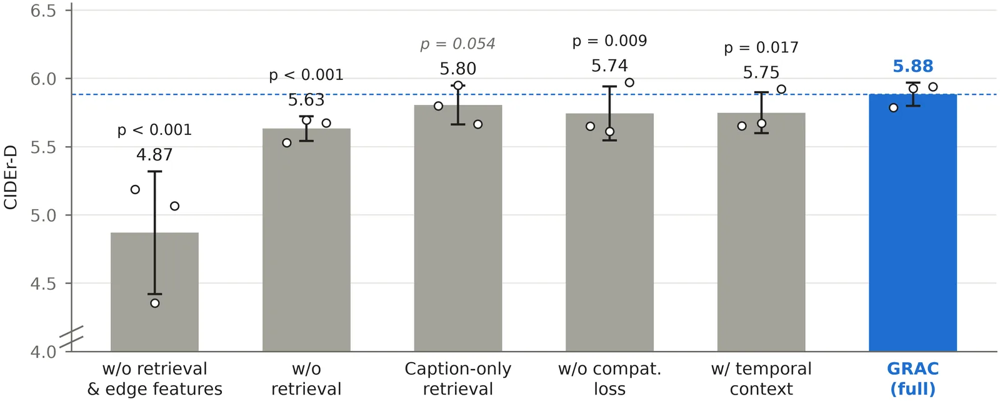
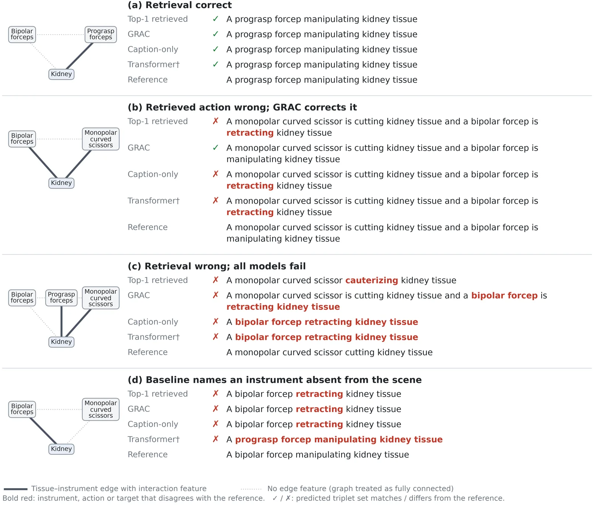

O Desafio da Documentação Cirúrgica Automatizada
Os vídeos de procedimentos cirúrgicos são uma fonte rica de informação para treinamento, avaliação de desempenho e análise de fluxo de trabalho. No entanto, extrair significado desses vídeos exige revisão manual extensiva e expertise clínica. Relatórios operatórios automáticos poderiam aliviar esse fardo, mas gerar descrições precisas é complexo. A principal dificuldade reside em mapear atividades visuais estruturadas para linguagem natural, especialmente quando os dados anotados são limitados.
Procedimentos cirúrgicos exibem padrões recorrentes de uso de instrumentos, ações e interações anatômicas. Isso sugere que descrições de cenas já observadas podem servir como conhecimento prévio útil. Abordagens baseadas em recuperação (Retrieval-Augmented Generation) oferecem uma direção promissora, incorporando exemplos relevantes do conjunto de treinamento ao processo de geração. O desafio é garantir que a recuperação não seja apenas baseada em aparência visual, mas nas atividades cirúrgicas reais, considerando que instrumentos semelhantes podem realizar ações diferentes em estruturas distintas.

Representação da Cena Cirúrgica como Grafo
O ponto de partida do GRAC é a representação da cena cirúrgica como um grafo estruturado. Cada frame de vídeo é modelado como um grafo G = (V, E, Xv, Xe). Os nós V representam instrumentos cirúrgicos e uma estrutura de tecido principal. As arestas E descrevem as conexões e interações entre eles. As matrizes de características Xv e Xe contêm features extraídas de bounding boxes anotadas, usando ResNet-18 para regiões de interesse (ROI) e features de interação.
Uma distinção importante é que as features de aresta não zero representam interações ativas (não ociosas) entre tecido e instrumento. Isso permite que o modelo capture não apenas quais instrumentos estão presentes, mas como eles estão interagindo com o tecido. Essa representação estruturada é fundamental, pois vai além da detecção de objetos simples, incorporando a topologia da cena cirúrgica.
Codificador de Grafo e Memória de Consulta
Para processar essa estrutura, o GRAC utiliza um Edge-Aware Graph Attention Network (GATv2). Este codificador consiste em duas camadas GATv2, cada uma com quatro heads de atenção de dimensão 128, produzindo representações de nós de 512 dimensões. Durante a passagem de mensagens, as características dos nós são atualizadas através de agregação ponderada por atenção dos vizinhos, com as informações de aresta guiando essa agregação. Isso permite que as representações dos nós sejam atualizadas de acordo com as interações observadas entre instrumento e tecido.
O resultado é uma representação em nível de grafo hg, mas o GRAC preserva também o contexto global e as interações individuais. Ele constrói uma memória de consulta (Query Memory) usando três tipos de tokens: um token em nível de grafo (hg), tokens de nós contextualizados (H) e tokens de interação derivados das features de aresta originais. Cada nó contribui com um token, e cada interação anotada contribui com dois tokens de aresta direcionada. A sequência é preenchida para um comprimento fixo de 19 tokens, suficiente para acomodar todos os grafos nos benchmarks EndoVis-18 e TORS sem truncamento.
Recuperação Contrastiva Guiada por Legendas
O coração do método é o módulo de recuperação. O GRAC mantém um banco de memória B contendo pares (grafo, legenda) do conjunto de treinamento. Para um grafo de consulta G, o modelo seleciona K=3 exemplos de grafo-legendas recuperados R(G). A recuperação não é baseada apenas em similaridade visual, mas em atividades cirúrgicas similares. Durante o treinamento, os candidatos de recuperação da própria sequência cirúrgica do query são excluídos para evitar auto-recuperação e matches por duplicidade próxima.
Os autores introduzem uma estratégia de aprendizado contrastivo supervisionado por legendas. Isso significa que as embeddings dos grafos de atividades cirúrgicas similares são trazidas para mais perto umas das outras no espaço latente. O objetivo é que o modelo recupere exemplos anteriores que descrevam atividades semelhantes, não apenas cenas visualmente parecidas. Isso é crucial, pois instrumentos semelhantes podem realizar ações diferentes ou interagir com estruturas anatômicas distintas.
Comparação de Grafos para Geração de Legendas
Apenas recuperar exemplos não é suficiente; é preciso comparar a cena atual com os exemplos recuperados. O GRAC desenvolve um mecanismo de comparação alinhado por instrumentos. Ele captura as diferenças entre os grafos de cena atuais e os recuperados e incorpora essas informações nas representações das legendas recuperadas. Essa comparação guia o gerador de legendas (um Transformer decoder) a produzir descrições que reflitam a atividade cirúrgica observada, ajustando a informação recuperada às especificidades do momento atual.
A geração da legenda é formulada como Pθ(Y | G, R(G)), onde Y é a sequência de legendas gerada. O decoder recebe a memória de consulta (Q) e as representações das legendas recuperadas condicionadas pela comparação dos grafos. Isso permite que o modelo use o conhecimento prévio dos exemplos recuperados, mas o adapte à cena específica, evitando a cópia direta de legendas que podem não corresponder perfeitamente à ação atual.

Resultados no Benchmark EndoVis-18
Avaliamos o GRAC no benchmark EndoVis-18, comparando-o com baselines convencionais e modelos baseados em grafos como SGT (Surgical Graph Transformer). O GRAC atingiu um CIDEr-D de 5.88, superando significativamente o SGT (4.23) e o Transformer convencional (3.36). Em métricas de qualidade de linguagem, como BLEU-4 (0.715) e METEOR (0.541), o GRAC também liderou. A diferença estatística foi confirmada com análise de bootstrap pareado (p < 0.001), indicando que a melhoria não é devido ao acaso.
Além da qualidade textual, a precisão factual é crítica em contextos médicos. O GRAC alcançou uma exatidão de conjunto de tripletas (instrumento-ação-alvo) de 52.6%, comparado a 32.7% do SGT e 26.2% do baseline mais forte convencional. Isso representa uma melhoria substancial na capacidade do modelo de descrever corretamente quais instrumentos estão realizando quais ações em quais tecidos. A taxa de instrumentos incorretos ou extras (alucinações) foi menor no GRAC (0.210) do que no SGT (0.260) e outros baselines.

Análise de Erros e Limitações
A análise de erros revela nuances importantes. O GRAC corrigiu 26 erros de instrumentos em comparação com oito regressões, indicando que a representação condicional de grafos ajuda a prevenir menções incorretas de instrumentos. No entanto, corrigir erros de ação permanece desafiador. Quando a legenda recuperada com maior classificação contém os instrumentos corretos, mas uma ação incorreta, o GRAC reproduz essa ação em 54-71% dos frames examinados. Isso sugere que a correspondência correta de instrumentos não garante necessariamente a interpretação correta da atividade cirúrgica associada.
Outra limitação observada é a sensibilidade ao número de exemplos recuperados. Aumentar o número de exemplos além de três reduziu o desempenho, e incorporar frames vizinhos não ofereceu melhoria sobre a configuração de frame único. Isso indica que a relevância da informação contextual é mais importante do que sua quantidade. O modelo funciona melhor com poucos, mas altamente relevantes, exemplos recuperados, em vez de uma grande janela de contexto.
Ablação: O Papel da Comparação de Grafos
As ablações mostram que as features de interação (arestas) e as legendas recuperadas contribuem complementariamente. Incorporar features de aresta aumenta o CIDEr-D de 4.870 para 5.632, destacando a importância da informação relacional. Adicionar a recuperação de legendas melhora ainda mais para 5.805. A adição das features de comparação de grafos (com supervisão de compatibilidade) não aumentou significativamente o CIDEr-D (5.883 vs 5.805, p=0.054), mas reduziu significativamente a alucinação de instrumentos (de 0.049 para 0.037, p=0.003).
Isso sugere que a supervisão de compatibilidade ajuda o modelo a usar as features de comparação principalmente para melhorar a precisão factual em nível de instrumento, em vez de aumentar a qualidade agregada da legenda. A melhoria na qualidade da linguagem pode ser limitada pelo vocabulário restrito das legendas cirúrgicas e pela alta recorrência de atividades, onde a cópia de legendas similares já é uma estratégia eficaz.
Generalização e Considerações Finais
O GRAC também foi avaliado no conjunto de dados TORS (da Universidade de Chicago), onde alcançou um CIDEr-D de 5.06, superando o baseline mais forte (3.80). Isso demonstra alguma generalização para diferentes tipos de procedimentos cirúrgicos. No entanto, as comparações com resultados publicados de SGT++ requerem cautela devido a diferenças nos features de entrada e protocolos de avaliação. O GRAC usa seleção de checkpoints baseada em desenvolvimento, enquanto os protocolos publicados de SGT usam seleção baseada no benchmark.
Em resumo, o GRAC demonstra que combinar representações estruturadas de cenas cirúrgicas (grafos) com exemplos recuperados melhora a descrição de cenas cirúrgicas. A abordagem é particularmente eficaz em reduzir alucinações de instrumentos e melhorar a precisão factual. No entanto, a correção de erros de ação permanece um desafio aberto, indicando a necessidade de alinhamentos mais confiáveis entre as interações cirúrgicas recuperadas e a cena de consulta. O trabalho mostra o potencial da recuperação aumentada em domínios estruturados e com conhecimento prévio recorrente.
O que fica
- O GRAC supera métodos tradicionais em CIDEr-D (5.88 vs 4.23) ao combinar grafos de cena com recuperação de legendas anteriores.
- A precisão factual de tripletas (instrumento-ação-alvo) aumenta significativamente, reduzindo alucinações de instrumentos.
- A recuperação guiada por legendas funciona melhor com poucos exemplos (K=3), sugerindo relevância sobre quantidade.
- Corrigir erros de ação permanece difícil, mesmo quando os instrumentos são identificados corretamente.
Paper original: GRAC: Graph-Based Retrieval-Augmented Captioning for Surgical Scene Description
Comentários
Nenhum comentário ainda. Seja o primeiro.